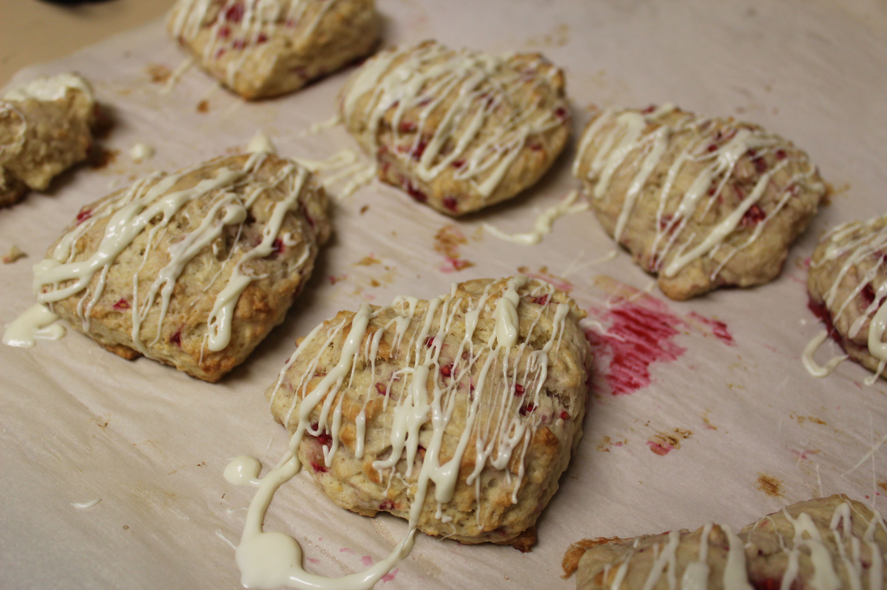

I've been obsessed over scones ever since I had my first one at Peet's Coffee a couple years ago. I wanted to recreate a delicious fruity scone I had at the coffee shop, so I chose to do a rasberry with a white chocolate drizzle! I've experienced making scones with milk, and also with sour cream + egg. Both created very joust scones, but I personally like using sour cream + egg in my scones.

Ingredients:
2 cups all purpose flour
1/3 cup sugar
2 teaspoons baking powder
1/4 teaspoon salt
1/2 cup refridgerated unsalted butter
1/2 cup sour cream
1 egg
1 teaspoon vanilla extract
1/2 cup fresh rasberries
1/4 cup white chocolate chips
Instructions:
1) Preheat the oven to 400 F degrees and place a parchment paper onto a cookie sheet
2) Combine the dry ingredients: flour, sugar, baking powder, and salt in a mixing bowl
3) Using two forks, slice up the butter into the dry ingredient mixture until the butter is in small pieces (size of a lentil)
4) In another bowl, combine the wet ingredients: sour cream, egg, and vanilla extract
5) Combine the wet ingredients with the dry ingredient mixture (do not over mix!)
6) Mix in the rasberries. The rasberries are going to break apart while mixing and that is ok!
7) Put the dough onto a floured surface and flatten so that it is about 3/4 inch thick
8) Use a cookie cutter to cut out shapes for your scone and place it onto the cookie sheet with the parchment paper
9) Bake for 14-16 minutes, or until the scones are lightly browned on the sides
10) Let the scones completely cool down
11) Heat up the white chocolate chips and drizzle on top of the scones
12) Enjoy! :)